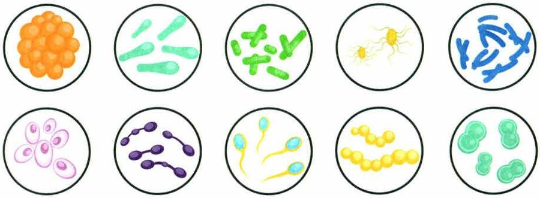
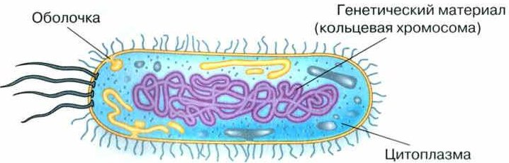
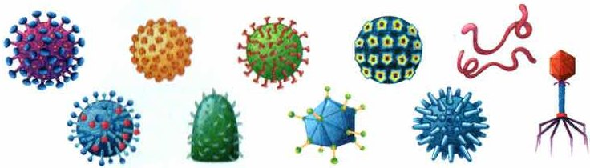

Бактерии
Бактерии по строению и жизни сильно отличаются от других организмов. Большинство из них видно только при большом увеличении микроскопа. Длина обычной бактерии — примерно в тысячу раз меньше миллиметра, а самые мелкие шарики — всего 0,0001 мм. Бактерии бывают разной формы (рис. 73).
Главная особенность бактерий: в их клетках нет ядра, отделённого от цитоплазмы мембраной. Снаружи клетку обычно покрывает плотная оболочка (рис. 74). Поэтому бактерии — безъядерные организмы, или прокариоты (§12).
Где живут. На Земле почти нет места без бактерий: они в почве, воздухе, воде, в растениях, животных и человеке.
Как живут. Одним бактериям нужен кислород, другие живут только там, где кислорода нет, а третьи могут и так, и так. Большинство бактерий питаются готовыми органическими веществами, но некоторые делают их сами — например, цианобактерии.
Характеристика бактерий. По своему строению и жизнедеятельности бактерии в значительной степени отличаются от других живых организмов. Клетки большинства бактерий можно увидеть только при большом увеличении микроскопа. Длина большинства бактерий примерно в тысячу раз меньше миллиметра, а клетки наиболее мелких шаровидных бактерий имеют в диаметре всего одну десятитысячную долю миллиметра (0,0001 мм). Их клетки имеют различную форму (рис. 73).
Отличительной особенностью бактерий является отсутствие в их клетках оформленного ядра, отделённого от цитоплазмы мембраной. Как правило, клетки большинства бактерий покрыты плотной оболочкой (рис. 74). Следовательно, бактерии относят к безъядерным организмам, или прокариотам.
Распространение бактерий. На нашей планете практически нет места, где бы не встречались бактерии. Они обитают в почве, воздухе, воде, в организмах растений, животных и человека.
Жизнедеятельность бактерий. Одни бактерии нуждаются в кислороде, а другие, наоборот, живут только в бескислородной среде. Встречаются виды, которые способны жить как в кислородной, так и в бескислородной средах. Большинство бактерий питаются готовыми органическими веществами, но некоторые способны самостоятельно образовывать органические вещества из неорганических, например цианобактерии.

▲ Найди шарики (кокки), палочки (бациллы) и спирали — вспомни §10.

▲ Найди: где у бактерии ядро? Подсказка: его нет.
1. Чем клетка бактерии отличается от клеток растений и животных?
2. Где живут бактерии?
Болезнетворные бактерии и защита от них
Некоторые бактерии, попав в организм человека, вызывают опасные болезни: чуму, туберкулёз, тиф, холеру, столбняк. Это болезнетворные бактерии.
Чтобы не заразиться, есть меры профилактики: кипятить питьевую воду, правильно готовить еду, соблюдать гигиену (мыть руки перед едой, чистить зубы), делать прививки — вакцинацию, принимать витамины, закаляться.
Бактериальные болезни лечат лекарствами под наблюдением врача. Заболевшего изолируют, а иногда объявляют карантин, чтобы болезнь не распространилась.
Болезнетворные бактерии. Попадая в организм человека, некоторые бактерии вызывают опасные болезни: чуму, туберкулёз, тиф, холеру, столбняк и мн. др.
Для предотвращения заражения бактериальными заболеваниями разработаны меры их профилактики. К ним относятся кипячение питьевой воды, правильная обработка пищевых продуктов, соблюдение правил личной гигиены (мыть руки перед едой, чистить зубы и т. п.), профилактические прививки (вакцинирование), приём витаминов, закаливание организма. Бактериальные заболевания лечат с помощью медикаментов под наблюдением врача. При этом заболевшего человека изолируют и устанавливают карантин, чтобы предотвратить распространение болезни.
Дневник опыта: чистые и грязные руки
Пакет № 1 — хлеб трогали немытыми руками, № 2 — вымытыми, № 3 — не трогали совсем. Записывай, что видишь. Пакеты не открывай!
| № 1 немытые | № 2 вымытые | № 3 не трогали | |
|---|---|---|---|
| День 1 | |||
| День 3 | |||
| День 5 | |||
| День 7 | |||
| Вывод | |||
Сначала сделай опыт и запиши, что увидела.
3. Какие меры помогают не заразиться бактериальными болезнями?
4. Зачем заболевшего человека изолируют?
Роль бактерий в природе и жизни человека
На Земле всё время идёт круговорот веществ, и бактерии — его важнейшее звено. Они разлагают остатки растений и животных до простых минеральных веществ, а растения снова их используют. Поэтому бактерии называют «санитарами» планеты.
Человек давно пользуется тем, что некоторые бактерии вызывают брожение. Так делают простоквашу, творог, сыр, квашеную капусту и соленья, а ещё силос — корм для скота. На заводах бактерии выращивают, чтобы получать антибиотики, витамины и другие вещества. А на очистных сооружениях бактерии очищают сточные воды.
Но бактерии и вредят: портят продукты и выделяют в них ядовитые вещества. Испорченной едой можно отравиться.
Роль бактерий в природе и жизни человека. Деятельность бактерий очень разнообразна. На Земле постоянно происходит круговорот веществ. Бактерии являются важнейшим звеном в этих процессах. При участии бактерий в природе происходит разложение сложных органических веществ (растительных и животных остатков) до простых минеральных соединений, которые вновь могут быть использованы растениями. Поэтому бактерии часто называют «санитарами» нашей планеты.
Человек издавна учитывает способность некоторых видов бактерий вызывать процессы брожения для приготовления простокваши, творога, сыра, квашеной капусты и солений, а также силоса на корм скоту. В микробиологической промышленности бактерии выращиваются для получения антибиотиков, витаминов и других веществ. Для очистки сточных вод в специальных очистных сооружениях культивируются бактерии, разлагающие органические остатки.
Бактерии могут наносить и ощутимый вред, например портя продукты питания. При этом они вырабатывают ядовитые вещества, которыми человек может отравиться, употребляя испорченные продукты.
Сначала сделай опыт и запиши, что увидела.
5. Почему бактерии называют «санитарами» планеты?
6. Какие продукты делают с помощью бактерий?
7. Чем бактерии вредят человеку?
Вирусы
Вирус (от лат. вирус — яд) — простейшая неклеточная форма жизни. Это микроскопическая частица: наследственная информация в белковой оболочке (рис. 75).
Вирусы бывают разной формы. Они очень маленькие — в 50 раз меньше бактерий, их не видно даже в световой микроскоп.
Как живут. Вне клетки вирус не проявляет никаких признаков жизни: не питается, не дышит, не растёт. Но стоит ему попасть в клетку другого организма — он начинает быстро размножаться: клетка-хозяин из своих веществ и сил делает копии вируса. Поэтому вирусы — внутриклеточные паразиты.
Вирусные болезни. Вирусы поражают всех: бактерии, грибы, растения и животных. У человека они вызывают грипп, корь, полиомиелит, бешенство, краснуху, оспу, гепатит и многие другие болезни.
В истории были эпидемии оспы и гриппа, уносившие миллионы жизней. Пандемия «испанского гриппа» в 1918—1920 годах унесла больше 20 миллионов человек. В 2019 году новый коронавирус Covid-19 быстро распространился по всему миру — и началась новая пандемия.
Чтобы побеждать пандемии и не допускать новых эпидемий, важны прививки и правила гигиены. Своевременная вакцинация — лучший способ не заболеть.
Значение вирусов огромно. Многие вызывают тяжёлые болезни (грипп, полиомиелит, ВИЧ, гепатит, бешенство), часто смертельные. Но вирусы бывают и полезными: они «тренируют» защитные силы организма. А вирусы, которые поражают бактерии, помогают медицине и ветеринарии побеждать бактериальные болезни без химических лекарств.
Характеристика вирусов. Вирус (от лат. вирус — яд) — простейшая неклеточная форма жизни. Вирус — микроскопическая частица, представляющая собой молекулы с наследственной информацией, заключённые в белковую оболочку (рис. 75). Вирусы могут иметь разнообразную форму, а их размеры настолько малы (варьируются от 20 до 300 нанометров, это в 50 раз меньше бактерий), что они даже не видны в световой микроскоп.
Жизнедеятельность вирусов. Вне клетки вирус не проявляет никаких признаков жизнедеятельности, т. е. не питается, не дышит, не развивается, не растёт. Только проникнув в клетку другого организма, он начинает быстро размножаться, создавая свои копии, используя для их создания ресурсы и питательные вещества клетки-хозяина. Таким образом, вирусы являются внутриклеточными паразитами.
Вирусные болезни. Вирусы поражают все живые организмы: бактерии, грибы, растения и животные. У человека вирусы вызывают такие опасные заболевания, как грипп, корь, полиомиелит, бешенство, краснуха, оспа, гепатит и мн. др.
В истории известны эпидемии оспы, гриппа, уносившие сотни тысяч и даже миллионы жизней. Так, пандемия (от греч. пандемос — принадлежащий всем людям) «испанского гриппа» в 1918—1920 годах унесла жизни более 20 млн человек. В 2019 году появление нового типа коронавируса Covid-19 и его быстрое распространение по всему миру привело к возникновению новой пандемии.
Для победы над пандемией и предупреждения возникновения новых эпидемий кроме вакцинации, важно строго соблюдать правила личной и общественной гигиены. Профилактика вирусных инфекций, в том числе с помощью своевременной вакцинации — лучший способ избежать заболевания и важный элемент здорового образа жизни человека.
Значение вирусов огромно как в живой природе, так и в жизни человека. Вирусы являются паразитами и поражают все известные организмы. Многие из них вызывают у человека тяжёлые заболевания (грипп, полиомиелит, ВИЧ, гепатит, бешенство), часто с летальным исходом. Вирусы могут быть и полезными, они стимулируют деятельность защитных сил организмов. Многие вирусы, которые поражают бактерии, очень важны для медицины и ветеринарии, они позволяют естественным путём и без химических реагентов побеждать многие бактериальные инфекции.

8. Чем вирус отличается от всех остальных организмов?
9. Почему вирусы называют внутриклеточными паразитами?
10. Какой способ избежать вирусных болезней учебник называет лучшим?
11. Чем вирусы могут быть полезны?
Итоги и «Моя лаборатория»
Бактерии · Болезнетворные бактерии · Пандемия
- Каковы особенности строения клеток бактерий?
- Почему бактерий относят к прокариотам?
- Какую роль играют бактерии в природе и жизни человека?
- Какие меры профилактики следует соблюдать для предотвращения бактериальных заболеваний?
- Каковы особенности строения и жизнедеятельности вирусов?
- Какие вирусные заболевания вам известны?
- Что произойдёт, если все бактерии на Земле будут уничтожены? Свой ответ обоснуйте.
- Можно ли считать вирус организмом?
- Болезни, вызываемые бактериями у человека (растений, животных), и меры их профилактики.
- Роль бактерий в природе.
- Роль бактерий в жизни человека.
- Болезни, вызываемые вирусами у человека, и меры их профилактики.
Вирусные болезни известны с древности: эпидемии оспы в Китае и Индии описаны ещё в X веке до нашей эры. Первую прививку — от оспы — сделал английский врач Эдвард Дженнер в 1796 году. В XX веке прививку от оспы делали всем людям, и в 1977 году был последний случай заражения оспой. Прививки победили целую болезнь!
Заболевания, имеющие вирусную природу, известны с глубокой древности. Эпидемии оспы в Китае и Индии отмечены ещё в источниках X века до нашей эры. Первую вакцинацию в 1796 году провёл английский врач Эдвард Дженнер против оспы. В XX веке проводили всеобщую вакцинацию населения против оспы. Это привело к резкому сокращению заболеваемости, и в 1977 году был зарегистрирован последний случай заражения вирусом оспы.
С болезнетворными бактериями борются тремя способами. Стерилизация — уничтожение бактерий температурой выше 100 °С, ультрафиолетом, ультразвуком; так обеззараживают медицинские инструменты. Пастеризация — многократное нагревание продукта до 60—70 °С; посмотри в магазине — на пакетах молока пишут «пастеризованное». Дезинфекция — уничтожение бактерий химическими веществами, например хлором.
Для борьбы с болезнетворными бактериями применяют стерилизацию, пастеризацию и дезинфекцию. Стерилизация — процесс уничтожения бактерий с помощью температуры свыше 100 °С, ультрафиолетовых лучей, ультразвука и т. д. Стерилизация применяется для обеззараживания медицинских инструментов. Пастеризация — многократное нагревание продукта до температуры 60—70 °С. Пастеризованное молоко вы можете увидеть на прилавках продуктовых магазинов. Дезинфекция — уничтожение бактерий с помощью специальных химических веществ. Так, хлор добавляют во многие дезинфицирующие средства.
Вирусы открыл русский учёный Дмитрий Иосифович Ивановский. В 1892 году он изучал мозаичную болезнь табака и понял: её возбудитель очень маленький, не растёт на питательных средах и не виден в световой микроскоп. Его назвали вирусом. Ивановского считают основателем вирусологии — науки о вирусах. А увидеть вирусы смогли только в 1939 году, когда изобрели электронный микроскоп.
Открытие вирусов принадлежит русскому учёному Дмитрию Иосифовичу Ивановскому, который в 1892 году опубликовал работу по изучению мозаичной болезни табака. Ивановский установил, что возбудитель этой болезни имеет очень малые размеры, не растёт на питательных средах и не обнаруживается в световом микроскопе. Его назвали вирусом. После этого открытия началось активное изучение вирусов, а Ивановский считается основателем Вирусологии — науки о вирусах. Но увидеть вирусы учёным удалось только в 1939 году после изобретения электронного микроскопа.
Проверь себя
Ошиблась — не страшно, попробуй другую кнопку.
Грипп
Вирусная болезнь.
Туберкулёз
Бактериальная болезнь.
Корь
Вирусная болезнь.
Холера
Бактериальная болезнь.
Бешенство
Вирус передаётся через укус больного зверя.
Столбняк
Бактериальная болезнь.
Бактерии делают йогурт
Брожение.
Бактерии портят продукты
И выделяют яды.
Бактерии разлагают опавшие листья
«Санитары» планеты.
Бактерии очищают сточные воды
На очистных сооружениях.
1. Чего нет в клетке бактерии?
2. Почему бактерии называют «санитарами» планеты?
3. Что делают с помощью бактерий брожения?
4. Что умеет вирус вне клетки?
5. Кто сделал первую прививку?
6. Тебя поцарапала дворовая кошка. Что делать?
Расскажи вслух
Бактерии
- Очень маленькие, без ядра — прокариоты; живут везде.
- Болезнетворные бактерии вызывают чуму, туберкулёз, холеру; защита — гигиена, кипячение воды, прививки.
- «Санитары» планеты; с их помощью делают йогурт, сыр, квашеную капусту, антибиотики.
Вирусы
- Неклеточная форма жизни: наследственная информация в белковой оболочке; в 50 раз меньше бактерий.
- Вне клетки не живут; размножаются только в чужой клетке — внутриклеточные паразиты.
- Вызывают грипп, корь, бешенство; пандемии; лучшая защита — вакцинация.